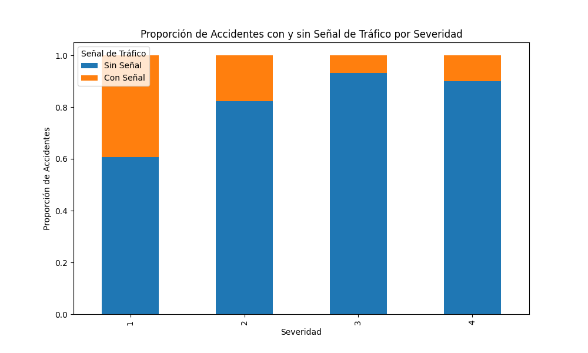

Introducción y agradecimientos
Este portal pretende informar a los lectores acerca de los accidentes de tráfico que han ocurrido en EEUU. Para hacerlo, se han usado los siguientes datos: https://www.kaggle.com/datasets/sobhanmoosavi/us-accidents. Esta fuente de datos contiene más de 6 millones de datos recopilados a partir del 2016 hasta mayo de 2023, cuando se actualizó por última vez. Me gustaría aprovechar esta oportunidad para agradecer su generosidad al creador de este conjunto de datos al compartir abiertamente esta información tan valiosa.
Los accidentes de tráfico, un problema creciente
Tal y como podemos observar en el siguiente gráfico interactivo, los accidentes de tráfico son, por desgracia, cada vez más frecuentes.
¿Cómo es la distribución espacial de los accidentes?
La mayoría de accidentes suceden en los estados costeros, especialmente en la zona de California y Oregón. El siguiente mapa de calor muestra el número de accidentes por habitante por región.
Hemos creado este mapa de burbujas para visualizar de forma clara la distribución de los accidentes por ciudades, expresado en términos absolutos.
Impacto de los accidentes en carretera
En el siguiente gráfico podemos observar el impacto que tienen los accidentes en el tráfico. Esta medida es una forma objetiva de analizar la magnitud del accidente, que está muy relacionado con la gravedad de este. Para una visualización clara, hemos clasificado dicho impacto en las siguientes categorías: "Highest", "Highh", "Medium" y "Low".
Las señales de tráfico como solución
Por otro lado, un análisis posterior ha revelado que existe cierta correlación entre la severidad de los accidentes y señalización de la zona. El siguiente gráfico muestra el número de accidentes desglosado por severidad y agrupado por la existencia o no de la señalización adecuada en la zona.
Como se puede observar, los accidentes menos severos son los que ocurren en mayor proporción en zonas señalizadas. Por el contrario, los accidentes más graves suelen ocurrir en zonas no señalizadas.
¿Cómo es la distribución temporal de los accidentes?
Si observamos los días de la semana en los que son más frecuentes los accidentes, observamos como hay menos accidentes el fin de semana. Entre semana, los accidentes van aumentando ligeramente a medida que se acerca el fin de semana.
Al observar la distribución por meses, observamos una distribución relativamente estable, aunque en los meses fríos suelen haber más accidentes.